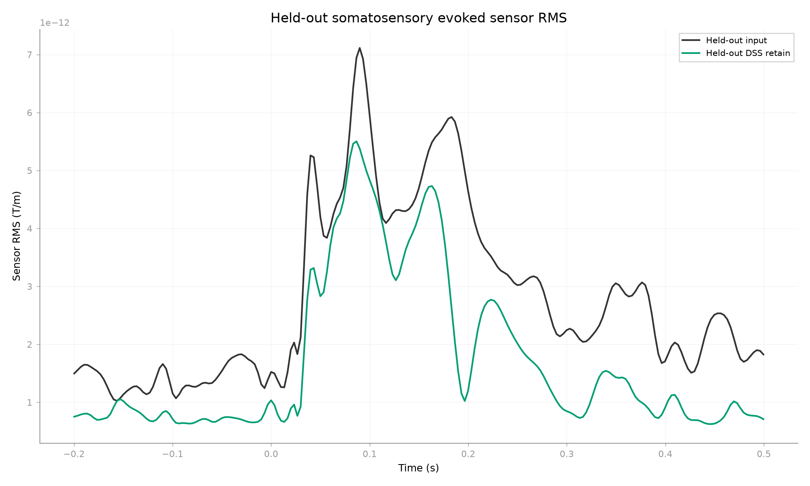
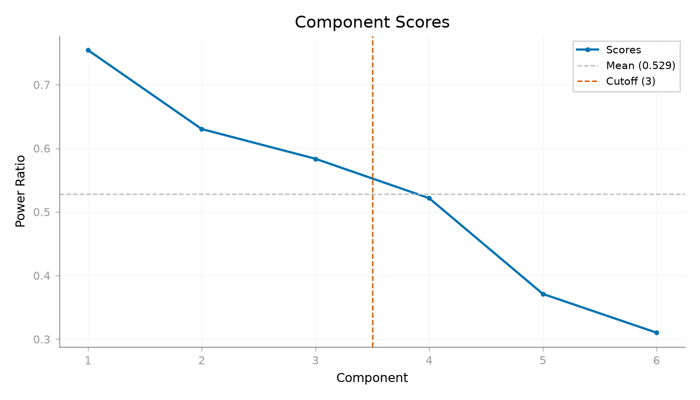

Note
Go to the end to download the full example code.
Enhancing a reproducible somatosensory response with DSS#
Can trial-average DSS learned on one set of somatosensory MEG trials enrich reproducible evoked activity in independent held-out trials while limiting distortion of the held-out evoked response?
DSS ranks components according to a chosen bias criterion. Here the bias is trial reproducibility, so the fitted spatial subspace emphasizes activity that survives averaging across repeated trials. A high score means strong according to that criterion; it does not identify a neural source by itself [1][2].
The before-versus-after comparison is a held-out preservation control, not a clean-neural ground truth.
References#
Load one somatosensory condition from the MNE Somato dataset#
import mne
import numpy as np
from mne.datasets import somato
from mne_denoise.dss import DSS, AverageBias
from mne_denoise.viz import plot_component_score_curve, plot_evoked_gfp_comparison
data_path = somato.data_path(update_path=False)
subject = "01"
task = "somato"
raw_fname = data_path / f"sub-{subject}" / "meg" / f"sub-{subject}_task-{task}_meg.fif"
raw = mne.io.read_raw_fif(raw_fname, preload=False, verbose="ERROR")
raw.crop(0.0, 360.0)
events = mne.find_events(raw, stim_channel="STI 014", verbose=False)
event_id = 1
somato_events = events[events[:, 2] == event_id]
raw.pick("grad", exclude="bads", verbose="ERROR").load_data(verbose="ERROR")
raw.filter(1.0, 40.0, verbose="ERROR")
epochs = mne.Epochs(
raw,
somato_events,
event_id={"Somato": event_id},
tmin=-0.2,
tmax=0.5,
baseline=(None, 0.0),
preload=True,
reject=None,
verbose=False,
)
Split trials before fitting#
Alternating trials keep both the training and held-out sets broad in time. The two held-out reproducibility halves are alternating as well, so their comparison is not an early-versus-late drift comparison.
train_epochs = epochs[::2]
held_out_epochs = epochs[1::2]
held_out_a = held_out_epochs[::2]
held_out_b = held_out_epochs[1::2]
if min(len(held_out_a), len(held_out_b)) < 2:
raise RuntimeError(
"The Somato crop must provide at least two trials in each alternating "
"held-out half."
)
n_components = 6
n_select = 3
model = DSS(
bias=AverageBias(axis="epochs"),
n_components=n_components,
n_select=n_select,
component_action="retain",
# Use the Somato recording's declared MNE rank for both covariances.
cov_kws={"rank": "info"},
verbose=False,
)
model.fit(train_epochs)
cleaned_held_out = model.transform(held_out_epochs)
Evaluate held-out reproducibility and evoked preservation#
before_evoked = held_out_epochs.average()
after_evoked = cleaned_held_out.average()
post_mask = before_evoked.times >= 0.0
# Two independent alternating halves of the held-out set provide the primary
# repeatability endpoint. Both halves use the same fitted spatial operator.
before_half_a = held_out_a.average()
before_half_b = held_out_b.average()
after_half_a = cleaned_held_out[::2].average()
after_half_b = cleaned_held_out[1::2].average()
split_half_before = float(
np.corrcoef(
before_half_a.get_data()[:, post_mask].ravel(),
before_half_b.get_data()[:, post_mask].ravel(),
)[0, 1]
)
split_half_after = float(
np.corrcoef(
after_half_a.get_data()[:, post_mask].ravel(),
after_half_b.get_data()[:, post_mask].ravel(),
)[0, 1]
)
held_out_waveform_correlation = float(
np.corrcoef(
before_evoked.get_data()[:, post_mask].ravel(),
after_evoked.get_data()[:, post_mask].ravel(),
)[0, 1]
)
before_sensor_rms = np.sqrt(np.mean(before_evoked.get_data()[:, post_mask] ** 2))
after_sensor_rms = np.sqrt(np.mean(after_evoked.get_data()[:, post_mask] ** 2))
held_out_sensor_rms_change = (after_sensor_rms - before_sensor_rms) / before_sensor_rms
print("Held-out somatosensory evoked DSS")
print(f"Training/held-out trial counts: {len(train_epochs)}/{len(held_out_epochs)}")
print(
"Held-out split-half evoked correlation before / after: "
f"{split_half_before:.4f} / {split_half_after:.4f}"
)
print(
"Held-out input-vs-cleaned post-stimulus evoked waveform correlation: "
f"{held_out_waveform_correlation:.4f}"
)
print(f"Held-out sensor-RMS normalized change: {held_out_sensor_rms_change:.4f}")
print("Preservation control: not clean-neural ground truth")
Held-out somatosensory evoked DSS
Training/held-out trial counts: 22/22
Held-out split-half evoked correlation before / after: 0.6646 / 0.9456
Held-out input-vs-cleaned post-stimulus evoked waveform correlation: 0.7182
Held-out sensor-RMS normalized change: -0.3016
Preservation control: not clean-neural ground truth
Inspect the held-out evoked result#
The main figure compares only the held-out evoked averages. The optional score curve shows the reproducibility-biased ordering used to retain the leading components.
plot_evoked_gfp_comparison(
before_evoked,
after_evoked,
times=before_evoked.times,
ci=None,
labels=("Held-out input", "Held-out DSS retain"),
x_label="Time (s)",
y_label="Sensor RMS (T/m)",
title="Held-out somatosensory evoked sensor RMS",
show=False,
)
plot_component_score_curve(model, mode="ratio", show=False)


<Figure size 1400x800 with 1 Axes>
Interpretation#
The component subspace was learned from the training trials, while both split-half reproducibility and the before-versus-after evoked comparison use held-out trials only. Increased repeatability is evidence that the selected subspace follows the specified bias on new trials; it is not proof that every retained component is neural. The before-versus-after comparison is a preservation control, not clean-neural ground truth. The retained count should be checked against the evoked endpoint and the signal of interest in an actual study.
Total running time of the script: (0 minutes 1.316 seconds)